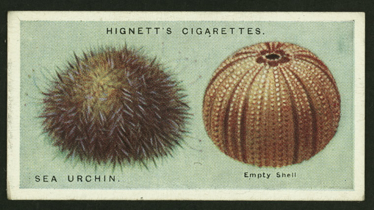
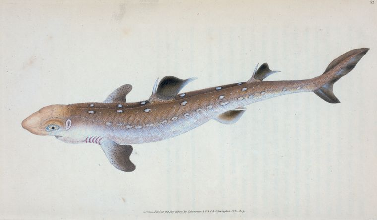
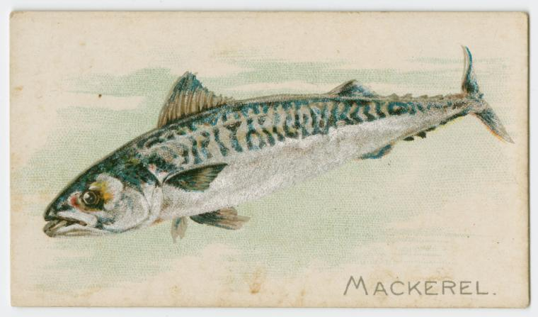
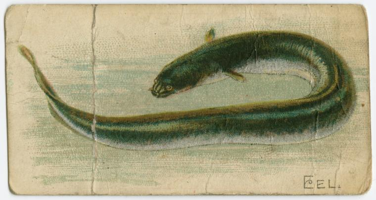

Maine
Sea Urchin
Kelp forests are underwater communities dominated by large macroalgae (seaweeds) that create dense “forests” that provide habitat, food, and shelter for Sea Urchin in gulf of Marine.
Dogfish
Dogfish, a voracious little shark that hunts in packs and fills its belly with anything it finds, now has so little value in the global marketplace that many fishermen who net them just throw them overboard.
Mackerel
Atlantic mackerel, sporty on light tackle, willing biters, delicious when drizzled with lemon juice and broiled on a grill, have everything to recommend them.
Eel
American eel (Anguilla rostrata) are a catadromous fish species, spending most of their life in freshwater or estuarine environments, traveling to the ocean as adults to reproduce and die.